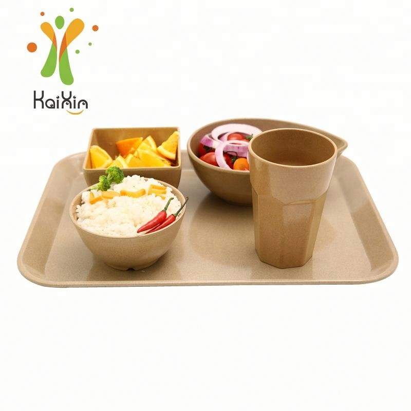
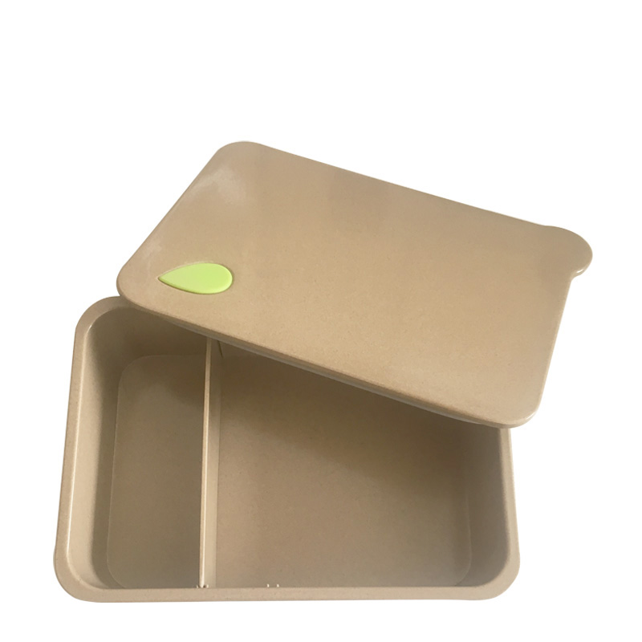
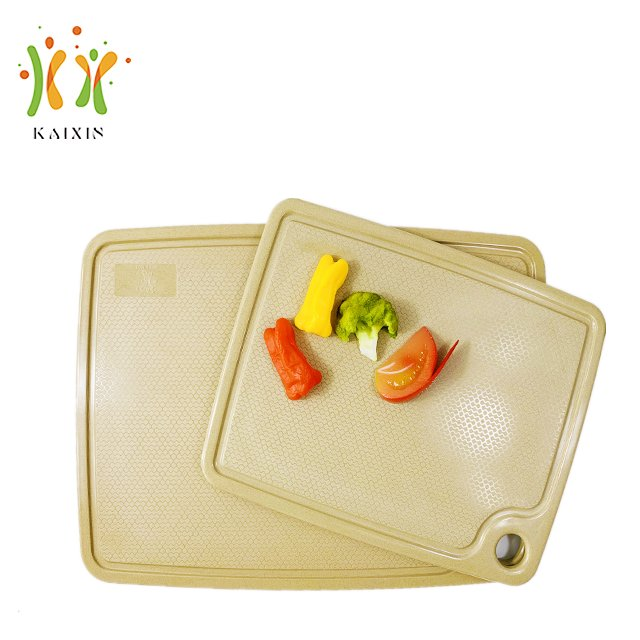
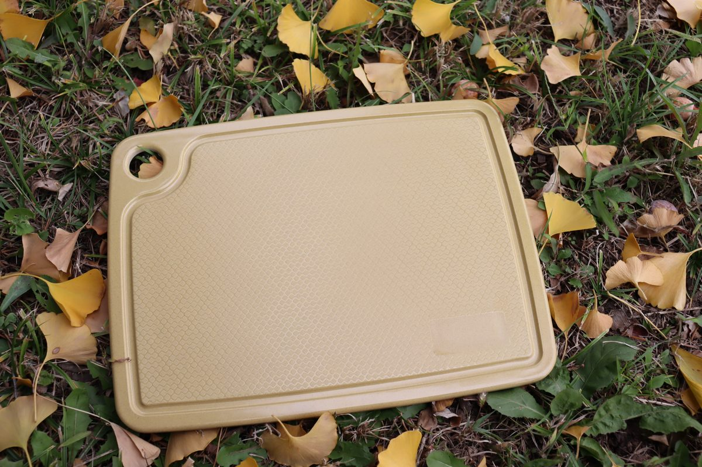

Most sourcing pages tell you to "choose a reliable supplier" and stop there. This one is built the other way round: it starts from the four decisions that actually move your landed cost — what you specify, what you pay for, how much you order, and when — and it gives you the sheet you need to get comparable quotes instead of five numbers that cannot be compared.

Buyers usually start with price. Price is the last thing that should be settled, because three of the four decisions above it change the number.
| Decision | What you are really choosing | Where the detail lives |
|---|---|---|
| 1. Specification | Material grade, wall thickness, piece weight, finish tolerance. This is where the price is set, whether or not anyone says so. | Material & safety guide, then the product pages for SKU data |
| 2. Customisation | Stock colour, Pantone match, logo method, retail packaging. Each layer adds an MOQ floor and a tooling or setup line. | OEM / ODM service page |
| 3. Order size | Pilot quantity, mixed container or full container. Determines freight per unit more than the FOB price does. | Container loading and MOQ guide |
| 4. Timing | Sample rounds, production slot, Chinese New Year, and the selling season in your market. | Factory and capacity page |
If you only have five minutes: read the spec sheet in section three, send it filled in, and ask every supplier to quote against it. That single move removes most of the ambiguity in a sourcing round.
We do not publish a price list, because a plate and a tumbler do not share a cost base. What we can publish is the structure, so you can see which line a cheaper quote has quietly deleted.
| Cost block | Roughly | What moves it, and how a low quote hides here |
|---|---|---|
| Husk and binder | Material share | Husk is cheap; food-grade starch binder is not. A compound with less fibre and more filler presses faster and looks fine — it also loses drop strength and dishwasher endurance. |
| Energy for pressing | Large | Heat pressing at 180 °C and above is the single biggest energy line. Shortening the dwell time is the classic way to win a price comparison and lose a customer in month seven. |
| Labour and finishing | Large in labour-cost markets | Edge trimming, deburring and polishing are hand-adjacent steps. Skipping polishing leaves sharp rims that your customers will photograph. |
| Packaging | Small to medium | Bulk carton versus printed retail box is a real cost difference. Ask which one the quote assumes. |
| Tooling amortisation | One-off, then per unit | A new mold is quoted from the drawing. On small runs it dominates the unit cost; on large runs it nearly disappears. Ask whether the quote amortises tooling or bills it separately. |
| Freight and duty | Destination-dependent | Not in the FOB price at all. This is why two quotes that differ by 6% can reverse once landed cost is calculated. |
The consequence worth remembering: in this category, a quote that is materially below the field is almost always a specification difference, not an efficiency gain. Ask which of the six blocks changed.
Copy these twelve lines into your RFQ. A supplier who answers all twelve is a supplier you can compare; one who answers eight is a supplier you will be re-briefing in three weeks.
| Line you ask for | Why it decides the outcome |
|---|---|
| 1. Item and SKU code | Photographs are not specifications. A code forces both sides to talk about the same mould. |
| 2. Dimensions and tolerance | A 2 mm diameter difference changes nesting, stacking height and therefore container cube. |
| 3. Piece weight | The most reliable proxy for wall thickness and fibre content. Ask for the range, not a single number. |
| 4. Colour reference | Natural, or a Pantone code. "Beige" is not a colour reference and will not match between two factories. |
| 5. Logo method and artwork | Molded into the piece or printed on the surface. Vector artwork, minimum line weight, one or two colours. |
| 6. Surface finish | As-pressed matte, or polished. Visible in the hand and in product photography. |
| 7. Food-contact documents required | Name the market and the report you need, for example SGS test report plus LFGB for Germany. |
| 8. Packaging format | Bulk carton, inner box, or printed retail box, with unit count per carton and carton dimensions. |
| 9. Quantity by SKU | Not one total. The per-SKU split is what determines whether your MOQ is met and how the container is built. |
| 10. Incoterm and destination | FOB port, or CIF / DDP with the destination named. Quotes in different Incoterms are not comparable. |
| 11. Required delivery window | A date, not "as soon as possible". It decides whether you get a normal slot or a rush surcharge. |
| 12. Inspection terms | Who inspects, at what AQL, and whether third-party inspection is accepted. Settle this before the deposit, not after. |
Send it to us filled in and we will come back with a per-SKU quote, the MOQ position for each line, and the documents that apply — usually within one working day.
The right order size is not a number, it is a fit between your sell-through and the freight curve. Most first-time importers over-order on the wrong SKU and under-order on the right one.
| Scale | Typical shape | What to optimise for |
|---|---|---|
| Pilot | Stock shapes and natural colour, a handful of SKUs, sample-level quantities | Learning, not margin. Test drop resistance and wash cycles in your own kitchen, photograph the pieces in your own setting, and confirm your customers will accept the natural colour variation. |
| First container | Five to eight SKUs, mixed, one or two custom elements | Cube efficiency and range coverage. Rice husk tableware fills a 40HQ on volume long before weight, so mixed loading costs you almost nothing and protects you from a single slow mover. |
| Programme | Annual volume, committed colours and logos, scheduled releases | Price stability and production slots. This is the point at which tooling amortisation, packaging design and delivery windows become worth negotiating as one package. |
The MOQ floors that apply at each scale are set out on the OEM and ODM page: logos from 1,000 pcs per design either method, Pantone colour at 500 pcs per colour per size on boards and 1,000 pcs on cups, other shapes quoted per SKU.
Piece price is the wrong unit for reusable dinnerware. What your finance team actually needs is cost per service, and it has three inputs: landed cost per piece, the number of pieces you must own to run one service, and the number of services the piece survives.
Write it as (landed cost × par stock multiple) ÷ total services. The par stock multiple is the honest part most quotes leave out: if you need a second set in the wash while the first is on the table, your real investment is not the number of covers you serve.
Two suppliers can differ by 20% on piece price and be within 4% on cost per use, once breakage rate and service life are in the formula. That is not an argument for buying the cheap one — it is an argument for putting both numbers on the same page before you decide.

| Input | How to get a real number instead of a guess |
|---|---|
| Landed cost per piece | FOB price plus ocean freight plus duty plus inland, divided by sellable units after breakage in transit. |
| Par stock multiple | Count your wash cycle time against your service time. Most foodservice operations settle between 1.6 and 1.8 sets per cover, not 2.0. |
| Service life | Three to four years of daily use is typical for this material. In commercial settings, breakage ends a piece's life before wear does, so track breakage separately. |
| Replacement rate | Ask for the breakage rate from a reference customer in a similar operation. It matters more than any specification on the sheet. |
The longer version of this arithmetic, with the comparison against bamboo, ceramic and plastic, is in the cost-of-ownership comparison.
None of these are rare. All of them are visible in a single email exchange if you know what to look at.
| What you see | What it usually means |
|---|---|
| "Dishwasher safe" with no cycle named | The claim was never tested against a specific programme, temperature and detergent. Ask for the parameters that were used. |
| A test report with no sample description | It may cover a different material or a different factory. A report is only evidence for the sample it names. |
| A price far below the field, with no explanation | Something in the six cost blocks changed: less fibre, shorter press, skipped polishing, or thinner walls. |
| MOQ quoted as one number for everything | Custom logos, Pantone colours and new molds have different floors. One number means the supplier has not thought about your line item. |
| No answer on the fiber-to-binder ratio | Strength, weight and wash endurance all follow from that ratio. A supplier who cannot state it is not controlling it. |
| Inspection refused, or "our QC is enough" | Third-party inspection by SGS, BV, TÜV or Intertek is normal in this trade. A refusal is a finding in itself. |
The document set we can send before you order, and how to read each one, is on the quality and testing page. The twelve-question supplier interview is in this article.
Plan backwards from the season you are selling into, not forwards from the day you send the RFQ. Most missed windows are not production problems; they are a late start.
| Stage | Typical duration | What can stretch it |
|---|---|---|
| Quote and specification | 1–5 working days | An incomplete spec sheet. Every missing line becomes a round trip. |
| Samples, stock colour | Around 1–2 weeks | Courier transit more than production. |
| Samples, custom colour | 2–3 weeks | Pantone and artwork confirmation, plus the trial press. |
| New mold | Quoted from the drawing | Tooling and trial pressing. This is the stage that most often eats a season. |
| Production | 30–45 days | Starts after sample approval and deposit. Single-SKU runs hold one press; mixed orders spread across several. |
| Inspection and loading | 2–4 days | Give three working days' notice for third-party inspection so the lot is staged when the inspector arrives. |
| Ocean transit | Destination-dependent | Port congestion and peak season. Add buffer for a first shipment. |
One calendar item deserves its own line: the plant slows for roughly two weeks around Chinese New Year, and the weeks before it are the busiest of the year. If your season lands in Q2, the order has to be placed in Q4.

The twelve questions that separate a factory from a trading desk, and the answers that should worry you.
Read the checklist →
Why this material is cube-limited, how to build a mixed container, and the landed cost arithmetic.
Plan your first order →
Logo methods, Pantone matching, packaging and what a brand owner actually has to supply.
Read the branding guide →Product-level detail sits on the product pages, and the material questions are answered in the material and safety guide.
Fill in the twelve lines above, or send us your own format with the destination market and quantities by SKU. We reply with per-SKU pricing, the MOQ position for each line, the food-contact documents that apply, and a sample plan — usually within one working day.